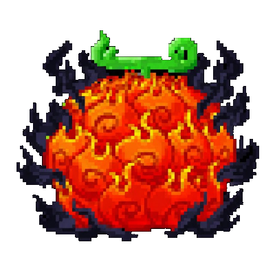
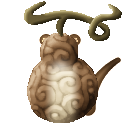

AkumaLib¶
AkumaLib is a shared ability framework for Mine Mine no Mi addons, on Minecraft 1.20.1 with Forge.
The base mod gives an addon Ability and a set of components. Everything above that has to be written from scratch by each addon, and gets written slightly differently every time: a zone that charges and expands, a wave that converts terrain, a grab that holds its target, a passive that grants attribute bonuses under a condition. AkumaLib is that layer, extracted once and shared.
A library, not a content mod
AkumaLib registers no fruits, no abilities and no items of its own. Installed alone, it does nothing a player can see. It exists so addons can build on it.
Start here¶
-
Getting started
Add the dependency, create your registry, register a first ability and a first Devil Fruit.
-
Pick a base class
Find the class that matches your technique: a zone, a wave, a grab, a dash, a passive...
-
Core concepts
The rules behind every class. Read them before your second ability: each describes a mistake that compiles, runs, and silently does the wrong thing.
-
Development
Work on an addon and the library side by side, and build a release jar correctly.
What's inside¶
-
Zones, block waves, grabs, dashes, stomps, conditional passives, auras, item producers, transmutation, awakened Zoan forms.
-
MorphGatesto lock an ability to a form,MorphStatsfor form attributes, and the amplification bus that lets a form upgrade the rest of a kit. -
A base
Animationclass, ready-made poses, and whole-body transforms that also reach full-form Zoan models. -
Boomerang and transmutation projectiles, steerable tornadoes, catchable creatures, and traps.
-
Per-player XP and levels with data-driven curves, Solo and Crew modes, a
/professioncommand, workstations with level-locked recipes, XP boosts. -
Worldgen and fluid registers, a deterministic grid of features, the overworld read from another dimension, dimension travel, jigsaw pools.
-
Your fruits in the base mod's Devil Fruit boxes with no loot file, and your items in chests you do not own.
-
Targeting, effects and who applied them, Belly and Extol, Doriki, tooltips, block propagation, idempotent attribute bonuses, size scaling.
Every one of these starts from AkumaRegistry: every deferred register a Mine Mine no Mi addon needs, bound to your mod id, with the base mod's naming conventions. See Create your registry.
How to read this documentation¶
Most of the library's code exists because something shipped broken first. The classes encode fixes that are easy to get wrong and invisible when you do: a deferred register that reaches the event bus late fails without a word; a passive bonus applied on transitions survives a reconnect and becomes permanent; a Devil Fruit passive is disabled the moment its holder gets wet, and stops ticking before it can clean up.
You get all of that by extending the class. Departing from one is fine, but read its class comment first: it usually records what went wrong. The API is mostly guessable from the signatures; what is not guessable is where it fails silently, so every such trap has a box:
| Box | Means |
|---|---|
| Danger | it breaks, often without an error: read it before you ship |
| Warning | a trap: it works, just not the way you expect |
| Info / Note | context: why something is the way it is |
| Tip | the way the existing addons do it |
| Success | something the library already does for you |
Requirements¶
| Version | |
|---|---|
| Minecraft | 1.20.1 |
| Forge | 47.4.18 or later |
| Mine Mine no Mi | 0.11.x (built against 1.20.1-0.11.5) |
| AkumaLib | 2.6.1 |
What each version added or changed, and what it requires: the changelog.
Built on AkumaLib¶
-

Awaken Awaken no Mi
Awakened forms for the base mod's Devil Fruits, and the addon AkumaLib was extracted from.
-

InoFruits
Brand-new Devil Fruits with their own abilities.
-
Skypiea as a dimension of its own, reached by a Knock-Up Stream: the cloud sea, the Angel Islands, the Upper Yards and Shandora.